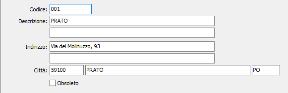

Stabilimenti
La tabella consente di codificare e memorizzare, in base ad un codice alfanumerico di 3 caratteri, gli Stabilimenti delle aziende che dispongono di più centri di produzione.

CODICE: codice alfanumerico di 3 caratteri per identificare lo Stabilimento in esame. Sul campo sono attive le funzioni di ricerca (F9) sulla tabella stessa.
DESCRIZIONE: campo alfanumerico di 50 caratteri per descrivere lo Stabilimento.
DESCRIZIONE 2: ulteriore campo alfanumerico di 50 caratteri per descrivere lo Stabilimento.
INDIRIZZO: campo alfanumerico di 50 caratteri per descrivere l’indirizzo dello Stabilimento.
INDIRIZZO 2: ulteriore campo alfanumerico di 50 caratteri per descrivere l’indirizzo dello Stabilimento.
CAP: campo numerico per descrivere il cap dello Stabilimento.
CITTÀ: campo alfanumerico di 50 caratteri per descrivere la città dello Stabilimento.
OBSOLETO: flag attivabile dall’utente per inibire ulteriori utilizzi dell’elemento di tabella in esame.